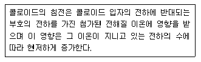
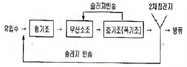
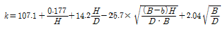
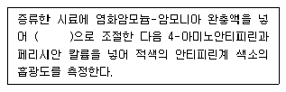
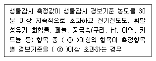
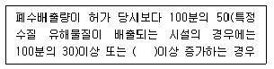

수질환경기사 (2010-07-25 기출문제)
1과목: 수질오염개론
1. 원핵세포와 진핵세포를 비교한 내용으로 옳지 않은 것은?
- 분열: 진핵세포-유사분열을 함, 원핵세포-유사분열 없음
- 세포소기관: 진핵세포-80S로 존재함, 원핵세포-70S로 존재함
- 세포크기: 진핵세포-큼, 원핵세포-작음
- 핵막- 진핵세포-있음, 원핵세포-없음
(정답률: 74%)

2. 평균 단면적이 400m2, 유량이 5,478,600m3/day, 평균 수심이 1.5m, 그리고 수온이 20℃인 어느 강의 재포기 계수(K2)는? (단, K2=2.2×(V/H1.33)로 가정함)
- 0.20/day
- 0.23/day
- 0.26/day
- 0.29/day
(정답률: 47%)
3. 거주 인구가 10000명인 신시가지의 오수를 처리장에서 처리 후 인접 하천으로 방류하고 있다. 하천으로 배출되는 평균 오수 유량은 60m3/hr, BOD 농도는 20mg/L 라 할 때, 오수처리장의 처리효율은? (단, BOD 인구당량은 50g/인ㆍ일로 가정)
- 86.5%
- 88.5%
- 92.5%
- 94.2%
(정답률: 55%)
4. 다음과 같이 이온의 전하와 응집력과의 관계를 나타낸 법칙은?

- Vander - Brown 법칙
- Derjagin - Verwey 법칙
- Schulze - Hardy 법칙
- Landau - Overbe 법칙
(정답률: 62%)
5. 용존산소농도가 9.0mg/L인 물 400리터가 있다면, 이 물의 용존산소를 완전히 제거하려 할 때 필요한 이론적 Na2SO3의 량(g)은? (단, 원자량 Na:23)
- 23.2
- 28.4
- 31.2
- 36.4
(정답률: 57%)
6. 어떤 시료의 생물학적 분해 가능 유기물질의 농도가 37mg/L이며 시료에 함유된 분해가능물질의 경험적인 분자식을 C6H11ON2 라고 할 때 시료의 최종 BOD(mg/L)은? (단, 최종 분해 물질은 CO2, H2O, NH3)
- 128
- 106
- 63
- 48
(정답률: 55%)
7. 어떤 하천의 5일 BOD가 250mg/L 이고 최종 BOD가 500mg/L이다. 이 하천의 탈산소계수(상용대수)는?
- 0.06/day
- 0.08/day
- 0.10/day
- 0.12/day
(정답률: 74%)
8. 최종 BOD가 300mg/L, 탈산소계수(자연대수를 base로 함)가 0.2day-1인 오수의 5일 소모 BOD는?
- 약 170 mg/L
- 약 190 mg/L
- 약 220 mg/L
- 약 240 mg/L
(정답률: 63%)
9. 200mg/L의 CaCl2 농도를 meq/L 로 환산하면 얼마인가? (단, Ca 원자량은 40)
- 3.6
- 4.6
- 5.6
- 6.6
(정답률: 60%)
10. 질소를 산화시키는 질산화 미생물에 대한 설명으로 옳지 않은 것은?
- Aerobic microorganism
- Heterotrophic microorganism
- Autotrophic microorganism
- Nitrosomonas, Nitrobacter
(정답률: 37%)
11. 최종 BOD가 15mg/L, DO가 5mg/L인 하천의 상류지점으로 부터 6일 유하거리의 하류지점에서의 DO농도는 몇 mg/L 인가? (단, DO 포화농도는 9mg/L, 탈산소 계수는 0.1/day, 재폭기 계수는 0.2/day이다. 상용대수 기준, 온도영향 고려치 않음)
- 약 4
- 약 5
- 약 6
- 약 7
(정답률: 66%)
12. glycine(CH2(NH2)COOH) 5mol을 분해하는데 필요한 이론적 산소 요구량은? (단, 최종산물은 HNO3, CO2, H2O 이다.)
- 520 g O2
- 540 g O2
- 560 g O2
- 580 g O2
(정답률: 62%)
13. 유기화합물과 무기화합물의 차이점으로 옳지 않은 것은?
- 유기화합물은 대체로 가연성이다.
- 유기화합물들은 일반적으로 녹는점과 끓는점이 높다.
- 유기화합물들은 대체로 이온 반응보다는 분자반응을 하므로 반응속도가 느리다.
- 유기화합물들은 대체로 물에 잘 녹지 않는다.
(정답률: 59%)
14. 최종 BOD농도가 500mg/L인 글루코스(C6H12O6)용액을 호기성 처리할 때 필요한 이론적 질소(N)농도(mg/L)는? (단, BOD5:N:P=100:5:1), 탈산소계수(k=0.01hr-1), 상용대수기준)
- 약 13.4 mg/L
- 약 18.4 mg/L
- 약 23.4 mg/L
- 약 28.4 mg/L
(정답률: 46%)
15. 황산염에 관한 설명으로 옳지 않은 것은?
- 황산이온은 자연수 속에 들어 있는 주요 음이온이다.
- 용존산소와 질산염이 존재하지 않는 환경에서 황산이온은 수소원(전자공여체)으로 사용된다.
- 황산이온이 과다하게 포함된 수돗물을 마시면 설사를 일으킨다.
- 황산이온이 혐기성 상태에서 환원되어 생성되어 황화수소로 인하여 악취문제가 발생한다.
(정답률: 74%)
16. 농업용수의 수질을 분석할 때 이용되는 SAR(Sodium Adsorption Ratio)과 관계없는 것은?
- NA+
- Mg2+
- Ca2+
- Fe2+
(정답률: 80%)
17. Ca(OH)2 4000mg/L 용액의 pH는? (단, Ca(OH)2는 완전 해리되며 Ca의 원자량은 40)
- 11.93
- 12.53
- 12.83
- 13.03
(정답률: 58%)
18. 박테리아(C5H7O2N) 5g/L을 COD로 환산하면 몇 g/L인가? (단, 질소는 암모니아로 전환됨)
- 6.3
- 7.1
- 8.3
- 9.2
(정답률: 47%)
19. 지하수의 특성에 관한 설명으로 옳지 않은 것은?
- 지하수는 년 중 수온이 변동이 적다.
- 흐름이 하천수에 비해 완만하며 한번 오염이 된 후에는 회복기간이 오래 걸린다.
- 토양의 여과, 부식작용으로 지하수 중에 탁도가 높다.
- 빗물로 인하여 광물질이 용해되어 경도가 높다.
(정답률: 69%)
20. 질소에 관한 설명으로 옳지 않은 것은?
- 대기 중에 질소는 질소순환에 따라 질소고정 박테리아에 의해 암모니아로 전환된다.
- 유기질소와 암모니아성 질소를 포함하는 물은 최근에 오염된 것으로 간주 할 수 있다.
- 혐기성 조건하에서 질산 이온과 아질산 이온이 모두 탈질반응에 의해 환원된다.
- 아질산 이온은 질산화 세균인 Nitrobacter 에 의하여 산화된다.
(정답률: 23%)
2과목: 상하수도계획
21. 펌프 회전차나 동체 속에 흐르는 압력이 국소적으로 저하하여 그 액체의 포화 증기압 이하로 떨어져 발생하는 펌프 운전시의 비정상 현상은?
- 캐비테이션
- 서어징
- 수격 작용
- 맥놀이 현상
(정답률: 64%)
22. 응집지(정수시설)내 급속혼화시설의 급속혼화방식과 가장 거리가 먼 것은?
- 공기식
- 수류식
- 기계식
- 펌프확산에 의한 방법
(정답률: 45%)
23. 상수관로에서 조도계수 0.014, 동수경사 1/100 이고, 관경이 400mm 일 때 이 관로의 유량은? (단, 만관 기준, Manning 공식에 의함)
- 0.19 m3/sec
- 0.28m3/sec
- 0.43m3/sec
- 0.82m3/sec
(정답률: 45%)
24. 하수시설인 우수조정지 구조형식과 가장 거리가 먼 것은?
- 댐식(제방높이 15m 미만)
- 저류식
- 굴착식
- 지하식
(정답률: 53%)
25. 정수시설 중 완속 여과지에 관한 설명으로 옳지 않은 것은?
- 여과지의 깊이는 하부집수장치의 높이에 자갈층 두께, 모래층 두께, 모래면 위의 수심과 여유고를 더하여 2.5 ~ 3.5m를 표준으로 한다.
- 완속여과지의 여과속도는 15~25m/day를 표준으로 한다.
- 완속여과지의 모래층 두께는 70~90cm를 표준으로 한다.
- 여과면적은 계획정수량을 여과속도로 나누어 구한다.
(정답률: 57%)
26. 하수의 합류식 배제방식에 관한 설명 중 옳지 않은 것은?
- 건설면(시공): 대구경관거가 되면 좁은 도로에서의 매설에 어려움이 있다.
- 수질보전면(우천시 월류): 우천시 오수의 월류가 없다.
- 유지관리면(관거내의 보수): 폐쇄의 염려가 없으며 검사 및 수리가 비교적 용이하다.
- 수질보전면(강우초기의 노면 세정수): 시설의 일부를 개선 또는 개량하면 강우초기의 오염된 우수를 수용해서 처리할 수 있다.
(정답률: 50%)
27. 상수도 시설인 급수장치의 급수방식과 가장 거리가 먼 것은?
- 저수조식
- 직결가압식
- 직결강압식
- 직결직압식
(정답률: 37%)
28. 단면형태가 직사각형인 하수관거의 장, 단점으로 옳은 것은?
- 시공장소의 흙두께 및 폭원에 제한을 받는 경우에 유리하다.
- 만류가 되기까지는 수리학적으로 불리하다.
- 철근이 해를 받았을 경우에도 상부하중에 대하여 대단히 안정적이다.
- 현장 타설의 경우, 공사기간이 단축된다.
(정답률: 39%)
29. 하수처리시설의 일차침전지에 대한 설명으로 옳지 않은 것은?
- 침전지 지수는 최소한 2지 이상으로 한다.
- 슬러지수집기를 설치하는 경우 직사각형 침전지의 바닥기울기는 2/100~5/100으로 한다.
- 표면부하율은 계획1일최대오수량에 대하여 분류식의 경우 35~70m3/m2ㆍd로 한다.
- 표면부하율은 계획1일최대오수량에 대하여 합류식의 경우 25~50m3/m2ㆍd로 한다.
(정답률: 56%)
30. 하수처리장의 이차침전지에 관한 설명으로 옳지 않은 것은?
- 유효수심은 2.5m~4m를 표준으로 한다.
- 침전시간은 계획1일 최대오수량에 따라 정하며 일반적으로 3~5시간으로 한다.
- 침전지 수면의 여유고는 40~60cm 정도로 한다.
- 고형물부하율은 25~40kg/m2-일로 한다.
(정답률: 29%)
31. 해수담수화시설중 역삼투설비에 관한 설명으로 옳지 않은 것은?
- 생산된 물은 pH나 경도가 낮기 때문에 필요에 따라 적절한 약품을 주입하거나 다른 육지의 물과 혼합하여 수질을 조정한다.
- 막모듈은 플러싱과 약품세척 등을 조합하여 세척한다.
- 고압펌프를 정지할 때에는 드로백(draw-back)이 유지되도록 체크 벨브를 설치하여야 한다.
- 고압펌프는 효율과 내식성이 좋은 기종으로 하며 그 형식은 시설규모 등에 따라 선정한다.
(정답률: 67%)
32. 계획 오수량에 관한 설명으로 옳지 않은 것은?
- 합류식에서 우천시 지하수량은 원칙적으로 계획시간 최대오수량의 3배 이상으로 한다.
- 계획1일최대오수량은 1인1일최대오수량에 계획인구를 곱한 후, 여기에 공장 폐수량, 지하수량 및 기타 배수량을 더한 것으로 한다.
- 계획1일평균오수량은 계획1일최대오수량의 70~80%를 표준으로 한다.
- 계획시간최대오수량은 계획1일최대오수량의 1시간당 수량의 1.3~1.8배를 표준으로 한다.
(정답률: 50%)
33. 상수도 시설인 도수시설의 도수노선에 관한 설명으로 옳지 않은 것은?
- 원칙적으로 공공도로 또는 수도 용지로 한다.
- 수평이나 수직방향의 급격한 굴곡을 피한다.
- 관로상 어떤 지점도 동수경사선보다 낮게 위치하지 않도록 한다.
- 몇 개의 노선에 대하여 건설비 등의 경제성, 유지관리의 난이도 등을 비교, 검토하고 종합적으로 판단하여 결정한다.
(정답률: 70%)
34. 하수도 시설인 펌프장 시설의 계획하수량에 관한 설명으로 옳은 것은?
- 합류식에서 빗물펌프장의 계획하수량은 합류관거의 계획하수량에 우천시 계획오수량을 더한 것으로 한다.
- 합류식에서 빗물펌프장의 계획하수량은 합류관거의 계획하수량에서 우천시 계획오수량을 뺀 것으로 한다.
- 합류식에서 빗물펌프장의 계획하수량 으로 한다.
- 합류식에서 빗물펌프장의 우천시 계획오수량 으로 한다.
(정답률: 23%)
35. 활성슬러지법에서 사용하는 수중형 초기기에 관한 설명으로 옳지 않은 것은?
- 저속터빈과 압력튜브 혹은 보통관을 통한 압축공기를 주입하는 형식이다.
- 혼합정도가 좋으며 결빙문제나 유체가 튀지 않는다.
- 깊은 반응조에 적용하며 운전에 융통성이 있다.
- 송풍조의 규모를 줄일 수 있어 전기료가 적게 소요된다.
(정답률: 53%)
36. 원심력 펌프의 규정회전수 N = 30회/sec, 규정 토출량 Q=0.8m3/sec, 규정 양정 15m 일 때, 펌프의 비교 회전도는? (단, 양흡입이 아님)
- 약 1⑤0
- 약 1250
- 약 1410
- 약 1640
(정답률: 52%)
37. 지하수(복류수 포함)의 취수시설인 집수매거에 관한 설명으로 옳지 않은 것은?
- 일방적으로 중량 취수에 이용되고 있다.
- 하천에 대소에 관계없이 이용된다.
- 하천바닥에 매몰되어 있어 관리하기 어렵다.
- 토사유입으로 수질 변동이 크다.
(정답률: 44%)
38. 정수시설 중 응집지 시설인 플록형성지에 관한 설명으로 옳은 것은?
- 플록형성시간은 계획정수량에 대하여 3~5분간을 표준으로 한다.
- 플록형성시간은 계획정수량에 대하여 5~10분간을 표준으로 한다.
- 플록형성시간은 계획정수량에 대하여 10~20분간을 표준으로 한다.
- 플록형성시간은 계획정수량에 대하여 20~40분간을 표준으로 한다.
(정답률: 82%)
39. 하수도시설인 호기성 소화조의 수와 형상에 관한 설명으로 옳지 않은 것은?
- 소화조의 수는 최소한 2조 이상으로 한다.
- 형상이 원형인 경우 바닥의 기울기는 5~10% 정도 되게 한다.
- 측심은 5m 정도로 한다.
- 지붕이 불필요하며 가온시킬 필요성이 없다.
(정답률: 39%)
40. 하수슬러지 농축방법 중 잉여슬러지 농축에 부적합한 것은?
- 부상식 농축
- 중력식 농축
- 원심분리 농축
- 중력벨트 농축
(정답률: 54%)
3과목: 수질오염방지기술
41. BOD 400mg/L, 유량 25m3/hr인 폐수를 활성슬러지법으로 처리하고자 한다. BOD 용적부하를 0.6kg BOD/m3ㆍday로 유지하려면 포기조의 수리학적 체류시간은?
- 8시간
- 16시간
- 24시간
- 32시간
(정답률: 57%)
42. 용량이 500m3인 수조의 염소이온 농도가 600mg/L 이다. 수조내의 폐수는 완전혼합이며 계속적으로 맑은 물이 20m3/hr로 유입된다면 염소이온의 농도가 20mg/L 로 낮아질 때까지 걸리는 소요시간은? (단, 1차 반응 기준)
- 2.84 day
- 3.54 day
- 4.34 day
- 5.14 day
(정답률: 54%)
43. 1일 10000m3의 폐수를 급속혼화지에서 체류시간 30sec 평균속도경사(G) 400sec-1인 기계식고속 교반장치를 설치하여 교반하고자 한다. 이 장치의 필요한 소요 동력은? (단, 수온은 10℃, 점성계수(μ)는 1.307×10-3kg/mㆍs)
- 약 621W
- 약 726W
- 약 842W
- 약 956W
(정답률: 53%)
44. 어떤 폐수의 암모니아성 질소가 10mg/L이고 동화작용에 충분한 유기탄소(CH3OH)를 공급한다. 처리장의 유량이 500∅m3/day라면 미생물에 의한 완전한 동화작용 결과 생성되는 미생물생산량은? (단, 20CH3OH+1502+3NH3→3C5H7NO2+5CO2+34H2O를 적용한다.)
- 224kg/day
- 404kg/day
- 607kg/day
- 837kg/day
(정답률: 33%)
45. 폭기조 내 MLSS 농도가 4000mg/L 이고 슬러지 반송률이 50%인 경우 이 활성슬러지의 SVI는? (단, 유입수 SS 고려하지 않음)
- 113
- 103
- 93
- 83
(정답률: 49%)
46. 생물학적 폐수처리공정에서 생물 반응조에 슬러지를 반송시키는 주된 이유는?
- 폐수처리에 필요한 미생물을 공급하기 위하여
- 폐수에 들어있는 독성물질을 중화시키기 위하여
- 활성슬러지가 자라는데 필요한 영양소를 공급하기 위하여
- 슬러지처리공정으로 들어가는 잉여슬러지의 양을 증가시키기 위하여
(정답률: 28%)
47. BOD 250mg/L 인 폐수를 살수 여상법으로 처리할 때 처리수의 BOD는 80mg/L 이었고 이때의 온도가 20℃였다. 만일 온도가 23℃로 된다면 처리수의 BOD 농도는? (단, 온도 이외의 처리조건은 같고, E: 처리효율 Et=E20×CiT-20. Ci=1.035임)
- 약 32 mg/L
- 약 42 mg/L
- 약 52 mg/L
- 약 62 mg/L
(정답률: 52%)
48. 역삼투 장치로 하루에 200000L의 3차 처리된 유출수를 탈염시키고자 한다. 25ℓ에서 물질전달계수=0.2068 L/(d-m2)(kPa), 유입수와 유출수 사이의 압력차는 2400kPa, 유입수와 유출수 사이의 삼투압차는 310kPa, 최저운전 온도는 10℃, A10℃=1.58A25℃ 라면 요구되는 막 면적은?
- 531m2
- 631m2
- 731m2
- 831m2
(정답률: 60%)
49. 슬러지 함수율이 90%인 슬러지 10m3/hr를 가압 탈수기로 탈수하고자 할 때 탈수기의 소요 면적(m2)은? (단, 비중은 1.0 기준, 탈수기의 탈수속도는 4kg(건조 고형물)/m2ㆍhr 이다.)
- 150
- 200
- 250
- 300
(정답률: 41%)
50. 활성슬러지 공정의 폭기조 내 MLSS 농도 2000mg/L, 폭기조의 용량 3m3, 유입 폐수의 농도 BOD 300mg/L, 폐수 유량 10m3/day 이며 처리수의 BOD 농도는 매우 낮다면 F/M비(kgBOD/kgMLSSㆍday)는?
- 0.3
- 0.4
- 0.5
- 0.6
(정답률: 53%)
51. CFSTR에서 물질을 분해하여 효율 95%로 처리하고자 한다. 이 물질은 0.5차 반응으로 분해되며, 속도상수는 0.⑤(mg/L)1/2/h이다. 유량은 500L/h이고 유입농도는 150mg/L 로서 일정하다면 CFSTR의 필요 부피는? (단, 정상상태 가정)
- 420m3
- 520m3
- 620m3
- 720m3
(정답률: 36%)
52. 폐수처리에 관련된 침전현상으로 입자간의 작용하는 힘에 의해 주변입자들의 침전을 방해하는 중간정도농도의 부유액에서의 침전은?
- 제1형 침전(독립입자침전)
- 제2형 침전(응집침전)
- 제3형 침전(계면침전)
- 제4형 침전(압밀침전)
(정답률: 61%)
53. 질산화 반응에 의한 알칼리도의 변화는?
- 감소한다.
- 증가한다.
- 변화하지 않는다.
- 증가 후 감소한다.
(정답률: 51%)
54. 처리인구 5200명인 2차 하수처리시설로 폭기식 라군공정을 설계하고자 한다. 유량은 380L/capㆍday, 유입 BOD5는 200mg/L, 유출 BOD5 20mg/L, K(반응속도상수)=2.1/day이며 kg BOD5 당 1.6kg 산소가 필요하다면 필요반응시간은? (단, 1차 반응, 1차 침전지에서 유입 BOD5의 33% 제거된다.)
- 1.71day
- 2.71day
- 3.71day
- 4.71day
(정답률: 24%)
55. 아래의 공정은 생물학적 질소, 인 제거의 대표적 공정인 A2/O 공정을 나타낸 것이다. 각 반응조의 기능에 대하여 가장 적절하게 설명한 것은?

- 혐기조:인방출, 무산소조:질산화, 폭기조:탈질
- 혐기조:인방출, 무산소조:탈질, 폭기조:인과잉섭취
- 혐기조:탈질, 무산소조:질산화, 폭기조:인방출
- 혐기조:탈질, 무산소조:인과잉섭취, 폭기조:질산화
(정답률: 56%)
56. PhoStrip 공정에 관한 설명으로 옳지 않은 것은?
- Stripping을 위한 별도의 반응조가 필요 없다.
- 인제거시 BOD/P비에 의하여 조정되지 않는다.
- 기존 활성슬러지 처리장에 쉽게 적용 가능하다.
- 인침전을 위하여 석회 주입이 필요하다.
(정답률: 30%)
57. 상수처리를 위한 사각 침전조에 유입되는 유량은 30000m3/d 이고 표면부하율은 24m3/m2ㆍd 이며 체류시간은 6시간이다. 침전조의 길이와 폭의 비는 2:1 이라면 조의 크기는?
- 폭: 25m, 길이 50m, 깊이 6m
- 폭: 30m, 길이 60m, 깊이 6m
- 폭: 25m, 길이 50m, 깊이 4m
- 폭: 30m, 길이 60m, 깊이 4m
(정답률: 59%)
58. 1차 처리결과 생성되는 슬러지를 분석한 결과 함수율이 90%, 고형물 중 무기성 고형물질이 30%, 유기성 고형물질이 70%, 유기성 고형물질의 비준 1.1, 무기성 고형물질의 비중이 2.2 로 판정되었다. 이 때 슬러지의 비중은?
- 1.017
- 1.023
- 1.032
- 1.041
(정답률: 54%)
59. 부피가 4000m3인 포기조의 MLSS농도가 2000mg/L이다. 반송슬러지의 SS농도가 8000mg/L, 슬러지 체류시간(SRT)이 10일 이면 폐슬러지의 유량은? (단, 2차 침전지 유출수 중의 SS는 무시한다.)
- 100m3/day
- 125m3/day
- 150m3/day
- 175m3/day
(정답률: 45%)
60. 월류 부하가 150m3/mㆍday인 원형 침전지에서 1일 4000m3를 처리하고자 한다. 원형 침전지의 적당한 직경(m)은?
- 5.5m
- 6.5m
- 7.5m
- 8.5m
(정답률: 14%)
4과목: 수질오염공정시험기준
61. 시료의 보존방법으로 옳지 않은 것은?
- 암모니아성 질소 : 4℃, H2SO4로 pH 2 이하
- 용존 총질소 : 4℃, H2SO4로 pH 2 이하
- 질산성 질소 : 4℃, H2SO4로 pH 2 이하
- 총 질소 : 4℃, H2SO4로 pH 2 이하
(정답률: 43%)
62. 4각 위어를 사용하여 유량을 측정하고자 한다. 위어의 수두가 30cm, 수로의 밑면으로부터 절단 하부 모서리까지의 높이가 0.8m, 수로의 폭이 1.5m, 절단의 폭이 1.0m이다. 이 때의 유량은? (단,

)- 4.99 m3/분
- 5.26 m3/분
- 13.31 m3/분
- 17.54 m3/분
(정답률: 24%)
63. 공정시험기준의 내용으로 옳지 않은 것은?
- 상온은 15~20℃, 실온은 1~35℃로 하며 온수는 60~70℃, 냉수는 15℃ 이하로 한다.
- 방울수는 20℃에서 정제수 20방울을 적하할 때 그 부피가 약 1mL가 되는 것을 뜻한다.
- 여과용 기구 및 기기를 기재하지 않고 “여과한다”라고 하는 것은 유리섬유여지(3종/C)를 사용하여 여과함을 말한다.
- 제반시험 조작은 따로 규정이 없는 한 상온에서 실시하고 조작 직후 그 결과를 관찰하는 것으로 한다.
(정답률: 32%)
64. 카드뮴을 흡광광도법으로 측정할 때 사용하는 시액으로 옳지 않은 것은?
- 수산화나트륨용액
- 요오드화칼륨용액
- 주석산용액
- 구연산이암모늄용액
(정답률: 37%)
65. NaOH 0.01M은 몇 ppm 인가?
- 40
- 400
- 4000
- 40000
(정답률: 57%)
66. 흡광광도법을 적용하여 음이온계면활성제를 측정할 때 음이온계면활성제가 메틸렌블루우와 반응하여 생성된 청색의 복합체 추출에 사용되는 것은?
- 사염화탄소
- 헥산
- 클로로포름
- 아세톤
(정답률: 50%)
67. 공정시험기준상 원자흡광광도법에 의한 수은 측정시 수은표준원액 제조를 위한 표준시약은?
- 염화제이수은
- 이산화수은
- 황화수은
- 황화제이수은
(정답률: 38%)
68. 식물성 플랑크톤(조류)의 시료재취시 침강성이 좋지 않은 남조류나 파괴되기 쉬운 와편모조류 등에 1~2 V/V%를 가하여 시료를 보전토록 하는 용액은?
- 란탄용액
- 루골용액
- 묽은 황산용액
- 포르말린
(정답률: 52%)
69. 투명도의 측정방법에 관한 설명으로 옳지 않은 것은?
- 측정값의 정확성을 기하기 위하여 반복해서 측정하고 평균값을 0.1m 단위로 읽는다.
- 투명도판의 색조차는 투명도에 미치는 영향이 크므로 판이 표면이 더러울 때는 다시 색칠하여야 한다.
- 흐름이 있어 줄이 기울어질 경우에는 2kg 정도의 추를 달아서 줄을 세워야 한다.
- 투명도판은 무게가 약 3kg인 지름 30cm 백색원판에 지름 5cm의 구멍이 8개 뚫려 있다.
(정답률: 56%)
70. 공정시험기준으로 유도결합플라즈마발광광도법을 이용하여 분석 가능한 오염물질은?
- 불소
- 비소
- 알킬수은
- 시안
(정답률: 47%)
71. 가스크로마토그래프를 사용하여 정성분석을 할 때 적용되는 머무름값에 관한 설명으로 옳지 않은 것은?
- 머무름시간은 10회 이상 측정하여 평균값을 구한다.
- 머무름의 종류는 머무름시간, 머무름용량, 비머무름용량, 머무름비, 머무름비수 등이 있다.
- 일반적으로 5~30분 정도에서 측정하는 봉우리의 머무름시간은 반복시험할 때 ±3% 오차 범위 이내이어야 한다.
- 머무름값의 표시는 무효부피의 보전유무를 기록하여야 한다.
(정답률: 22%)
72. 폐수 내 불소 측정에 관한 설명으로 옳지 않은 것은?
- 흡광광도법으로 분석시 시료 중 불소함량이 정량범위를 초과할 경우 탈색현상이 나타날 수 있다.
- 시료의 전처리(수증기증류법)시 염소이온이 다량 함유 되어 있는 시료는 증류하기 전에 황산은을 0.5mg/mgCl-비율로 넣어준다.
- 시료의 전처리(직접증류법)에서 증류플라스크 가열시 180℃ 이상이 되면 황산이 분해되어 유출되므로 약 178℃에서 가열을 중지한다.
- 이온전극법으로 측정할 수 있다.
(정답률: 36%)
73. 용존산소를 윙클러-아지드화나트륨변법으로 측정하고자 한다. Fe(Ⅲ)(100~200mg/L)이 함유되어 있는 시료의 전처리방법으로 측정할 수 있다.
- 황산의 첨가 후 불화칼륨용액(100g/L) 1mL를 가한다.
- 황산의 첨가 후 불화칼륨용액(300g/L) 1mL를 가한다.
- 황산의 첨가 전 불화칼륨용액(100g/L) 1mL를 가한다.
- 황산의 첨가 전 불화칼륨용액(300g/L) 1mL를 가한다.
(정답률: 53%)
74. 다음은 페놀류의 분석에 대한 측정원리이다. ( )안에 옳은 내용은?

- pH 7
- pH 8
- pH 9
- pH 10
(정답률: 67%)
75. 배출허용기준 적합 여부 판정을 위한 시료 채취(복수채취원칙)에 관한 내용 중 시안, 노말헥산추출물질, 대장균군등 시료채취기구 등에 의하여 시료의 성분이 유출 또는 변질의 우려가 있는 경우의 기준 내용으로 옳은 것은?
- 30분 이상 간격으로 2개 이상의 시료를 채취하여 각각 측정분석한 후 산술평균하여 측정분석값을 산출한다.
- 30분 이상 간격으로 2개 이상의 시료를 채취하여 각각 측정분석하고 그 중 최대값을 측정분석값으로 한다.
- 10분 이상 간격으로 4개 이상의 시료를 채취하여 각각 측정분석한 후 산술평균하여 측정분석값을 산출한다.
- 10분 이상 간격으로 4개 이상의 시료를 채취하여 각각을 분석하고 그 중 최대값을 측정분석값으로 한다.
(정답률: 59%)
76. 0.⑤N K2Cr2O7용액 500㎖를 만들려면, K2Cr2O7 몇 g 이 필요한가? (단, K2Cr2O7의 분자량은 294)
- 1.02g
- 1.23g
- 1.51g
- 1.84g
(정답률: 33%)
77. 시료의 최대보존기간이 가장 짧은 항목은?
- 색도
- 셀레늄
- 전기전도도
- 클로로필a
(정답률: 42%)
78. 시안화합물을 흡광광도법으로 분석 할 때 아비산나트륨용액을 넣어 제거하는 시료 내 방해물질은?
- 황화합물
- 철, 망간
- 잔류염소
- 질소화합물
(정답률: 39%)
79. 유입부의 직경이 100cm, 목(throat)부 직경이 50cm인 벤튜리미터로 폐수가 유입되고 있다. 이 벤튜리미터 유입부 관 중심부에서의 수두는 100cm, 목(throat)부의 수두는 10cm 일 때 유량(cm3/sec)은? (단, 유량계수는 1.0 이다.)
- 약 842000
- 약 852000
- 약 862000
- 약 872000
(정답률: 33%)
80. 폐수처리 시설에서의 유입수 및 유출수의 COD를 측정하기 위해 유입수는 시료 5㎖ 한 후, COD를 측정했을 때 N40 과망간상칼륨 용액의 적정치는 각각 5.2㎖와 2.7㎖였다. COD 제거율은 몇 %인가? (단, N/40 과망간산 칼륨 용액의 역가는 1.000 이며 공시험치는 0.2㎖ 이다. 산성 100℃ 에서 과망간산칼륨에 의한 화학적ㆍ산소요구량 실험 기준)
- 98
- 95
- 87
- 83
(정답률: 26%)
5과목: 수질환경관계법규
81. 폐수처리업자에 대한 1차 행정처분기준이 등록취소에 해당하는 위반사항내용으로 가장 정확한 것은?
- 등록 후 1년 이내에 영업을 개시하지 아니하거나 계속하여 1년 이상 영업실적이 없는 경우
- 등록 후 1년 이내에 영업을 개시하지 아니하거나 계속하여 2년 이상 영업실적이 없는 경우
- 등록 후 2년 이내에 영업을 개시하지 아니하거나 계속하여 1년 이상 영업실적이 없는 경우
- 등록 후 2년 이내에 영업을 개시하지 아니하거나 계속하여 2년 이상 영업실적이 없는 경우
(정답률: 32%)
82. 폐수배출시설에서 배출되는 수질오염물질의 배출허용 기준으로 옳은 것은? (단, 1일 폐수배출량 2000m3 미만인 사업장, 나지역. 단위: mg/L)
- BOD 90 이하, COD 100 이하, SS 90 이하
- BOD 100 이하, COD 110 이하, SS 100 이하
- BOD 110 이하, COD 120 이하, SS 110 이하
- BOD 120 이하, COD 130 이하, SS 120 이하
(정답률: 62%)
83. 낚시금지, 제한구역의 안내판의 규격 및 내용에 관한 기준 중 안내판의 바탕색과 글씨로 옳은 것은?
- 바탕색: 녹색, 글씨: 흰색
- 바탕색: 흰색, 글씨: 녹색
- 바탕색: 청색, 글씨: 흰색
- 바탕색: 흰색, 글씨: 청색
(정답률: 60%)
84. 상수원의 수질보전을 위한 통행제한을 위하여 통행할 수 없는 도로, 구간 및 자동차 등 필요한 사항은 환경부장관이 누구와 협의하여 환경부령으로 정하는가?
- 유역환경청장 또는 지방환경청장
- 경찰청장
- 시ㆍ도지사
- 국토해양부장관
(정답률: 24%)
85. 1일 800m3의 폐수가 배출되는 사업장의 환경기술인의 자격에 관한 기준은?
- 수질환경기사 1명 이상
- 수질환경산업기사 1명 이상
- 환경기능사 1명 이상
- 2년 이상 수질분야 환경관련 업무에 직접 종사한 자 1명 이상
(정답률: 55%)
86. 폐수무방류배출시설에서 배출되는 폐수를 재이용하는 경우 동일한 폐수무방류배출시설에서 재이용하지 아니하고 다른 배출시설에서 재이용하거나 화장실 용수, 조경용수 또는 소방용수 등으로 사용하는 행위를 한 폐수무방류배출시설의 설치허가 또는 변경허가를 받은 사업자에 대한 벌칙기준은?
- 7년 이하의 징역 또는 5천만원 이하의 벌금
- 5년 이하의 징역 또는 3천만원 이하의 벌금
- 3년 이하의 징역 또는 2천만원 이하의 벌금
- 2년 이하의 징역 또는 1천만원 이하의 벌금
(정답률: 40%)
87. 환경부 장관은 비점오염원관리지역을 지정, 고시한 때에는 비점오염원관리대책을 수립하여야 한다. 다음 중 관리대책에 포함되어야 할 사항과 가장 거리가 먼 것은?
- 관리대상 수질오염물질의 발생 예방 및 저감방안
- 관리대상 수질오염물질의 종류 및 발생량
- 관리대상 지역의 개발현황 및 계획
- 관리목표
(정답률: 47%)
88. 환경부장관은 폐수처리업의 등록을 한 자에 대하여 영업정지를 명하여야 하는 경우로서 그 영업정지가 주민의 생황 그 밖의 공익에 현저한 지장을 초래할 우려가 있다고 인정되는 경우에는 영업정지처분에 갈음하여 과징금을 부과할 수 있는데, 그 최대 과징금액은?
- 1억원
- 2억원
- 3억원
- 5억원
(정답률: 43%)
89. 파천의 수질 및 수생태계의 생활환경기준으로 옳지 않은 것은? (단, 등급: 약간 좋음, 단위: mg/L)
- BOD: 3 이하
- COD: 4 이하
- SS: 25 이하
- DO: 5.0 이상
(정답률: 22%)
90. 해역의 수질 및 수생태계 생활 환경기준으로 옳은 것은?
- Ⅰ등급 - pH : 6.5~8.3, BOD : 1mg/L 이하
- Ⅱ등급 - 총질소 : 0.6mg/L 이하, COD : 2mg/L 이하
- Ⅲ등급 - pH : 6.5~8.3, 용매추출유분 : 0.5 mg/ 이하L
- Ⅳ등급 - 총인 : 0.09 mg/L 이하, DO : 2mg/L 이상
(정답률: 21%)
91. 배출시설에서 배출하는 폐수를 최종방류구로 방류하기 전에 재이용하는 사업자에게 기본배출부과금 감결을 위해 적용되는 폐수 재이용률별 감면율로 옳지 않은 것은?
- 재이용률이 10% 이상 30% 미만인 경우 : 100분의 30
- 재이용률이 30% 이상 미만인 경우 : 100분의 50
- 재이용률이 60% 이상 90% 미만인 경우 : 100분의 80
- 재이용률이 90% 이상인 경우 : 100분의 90
(정답률: 40%)
92. 비점오염원의 변경신고 기중으로 옳지 않은 것은?
- 상호, 대표자, 사업명 또는 업종의 변경
- 총 사업면적, 개발면적 또는 사업장 부지면적이 처음 신고면적의 100분의 30 이상 증가하는 경우
- 비점오염저감시설의 종류, 위치, 용량이 변경되는 경우
- 비점오염원 또는 비점오염저강시설의 전부 또는 일부를 폐쇄하는 경우
(정답률: 43%)
93. 오염총량관리 조사ㆍ연구반의 수행 업무와 가장 거리가 먼 것은?
- 오염총량관리 기본계획에 대한 검토 업무
- 오염총량관리 시행계획에 대한 검토 업무
- 오염총량관리 성과지표에 대한 검토 업무
- 오염총량목표수질 설정을 위하여 필요한 수계특성에 대한 조사, 연구 업무
(정답률: 58%)
94. 정당한 사유 없이 공공수역에 특정수질유해물질을 누출, 유출시키거나 버린 자에 대한 벌칙기준은?
- 5년 이하의 징역 또는 3천만원 이하의 벌금
- 5년 이하의 징역 또는 2천만원 이하의 벌금
- 3년 이하의 징역 또는 2천만원 이하의 벌금
- 3년 이하의 징역 또는 1천500만원 이하의 벌금
(정답률: 16%)
95. 위임업무 보고사항의 업무내용 중 보고횟수가 연 1회에 해당 되는 것은?
- 환경기술인의 자격별 업종별 신고상황
- 폐수무방류배출시설의 설치허가(변경허가) 현황
- 골프장 맹ㆍ고독성 농약 사용 여부확인 결과
- 비점오염원의 설치신고 및 방지시설 설치 현황 및 행정 처분 현황
(정답률: 52%)
96. 다음은 수질오염감시경보 단계 중 경계단계의 발령기준이다. ( )안에 내용으로 옳은 것은?

- ① 1개, ② 2배
- ① 1개, ② 3배
- ① 2개, ② 2배
- ① 2개, ② 3배
(정답률: 35%)
97. 환경기술인 등의 교육에 관한 설명으로 옳지 않은 것은?
- 기술요원의 교육기관은 국립환경인력개발원이다.
- 교육과정은 환경기술인과정과 폐수처리기술요원과정이 있다.
- 교육과정의 교육기간은 5일 이내로 한다.
- 시ㆍ도지사는 교육실적을 환경부장관에게 제출하여야 한다.
(정답률: 20%)
98. 다음은 배출시설의 설치허가를 받은 자가 배출시설의 변경허가를 받아야 하는 경우에 대한 기준이다. ( )안에 내용으로 옳은 것은?

- 1일 300세제곱미터
- 1일 500세제곱미터
- 1일 600세제곱미터
- 1일 700세제곱미터
(정답률: 55%)
99. 다음 중 초과 부과금 산정시 1 킬로그램당 부과금액이 가장 큰 수질오염물질은?
- 크롬 및 그 화합물
- 비소 및 그 화합물
- 트리클로로에틸렌
- 납 및 그 화합물
(정답률: 42%)
100. 수질 및 수생태계 환경기준(하천) 중 사람의 건강보호를 위한 기준값으로 옳은 것은?
- 카드뮴 : 0.02 mg/L 이하
- 사염화탄소 : 0.04 mg/L 이하
- 6가 크롬 : 0.01 mg/L 이하
- 납(Pb) : 0.⑤ mg/L 이하
(정답률: 55%)
원핵세포와 진핵세포는 세포 구조와 기능에서 차이가 있으며, 세포소기관, 분열, 세포크기, 핵막 등의 측면에서 비교할 수 있다.
세포소기관은 세포 내에서 다양한 기능을 수행하는 작은 구조물이다. 진핵세포와 원핵세포 모두 세포소기관을 가지고 있지만, 그 크기와 구성 요소는 다를 수 있다. 진핵세포의 세포소기관은 80S 리보솜으로 구성되어 있고, 원핵세포의 세포소기관은 70S 리보솜으로 구성되어 있다.
따라서, "세포소기관: 진핵세포-80S로 존재함, 원핵세포-70S로 존재함"은 옳지 않은 것이다.